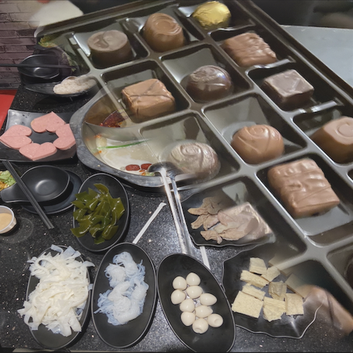
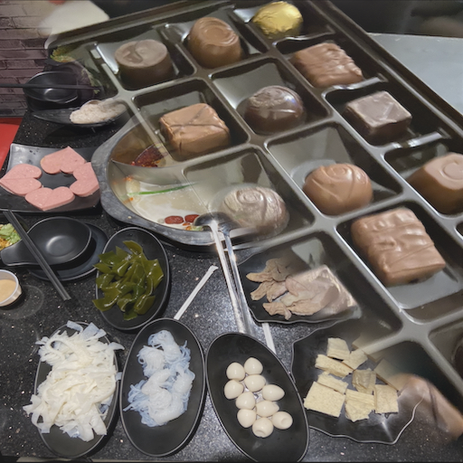

Image Blending Using Pyramids
CSC-676 Homework 3 / American University

This blending image from apple and orange
Suppose we start with two images: apple and orange. We need to blend two image into one, consider taking the left half of the apple and combine it beside each other with the right half of the orange to create a blending picture. However, if we combine these two directly, the blending picture will be very unnatural, and we will see the middle line split between apple and orange. The main idea is that we need to use Gaussian filter (low pass) and Laplacian filter (high pass) to generate pyramids and then smoothly blend two different images into one. Here is a following step:
- def interpolate(image): Interpolates an image with upsampling rate r=2.This needs to be scaled up since the kernel has a unit area.
- def decimate(image): Decimates an image with downsampling rate r=2.
- def pyramids(image): Constructs Gaussian and Laplacian pyramids. G is the Gaussian pyramid, L is the Laplacian pyramid.
- def pyramidBlending(A, B, mask): We have three images as input: input 1 and input 2 are the images we want to blend with, the third image is a mask image. The mask makes the image blend smooth. In this function, we call back the pyramids function splitting to three images to Gaussian and Laplacian pymarid. The picture blends smoothly when the Gaussian filter is applied to the subsampled mask. The mask's aim is to assist us in combining the Laplacian pyramids for both inputs. Finally, we apply the combined Laplacian to the original Gaussian-resized images multiplied by their respective masks to recreate the original image at each dimension. The following formula is LS(i, j) = GR(I, j)*LA(I, j) + (1-GR(I, j)* LB(I, j)).
- def reconstruct(pyramid): The next step is reconstructing the pyramids as well as upsampling and add up with each level. We need to reconstruct the original image using laplacian pyrimads of the image. The ideal idea is to reverse the order of the pyramids in order to start with the smallest pyramid.
- def colorBlending(img1, img2, mask): We know that a combination of three colors, namely Red, Green, and Blue, is an easy way to describe each pixel in image. This is what we are called the RGB image. In this case, we extract the RGB color from two images which we want to blend with, then call back the reconstruct and pyramidBlending functions we mentioned before to accomplish our final goal.
Applications
We use Gaussian pyramid to blur and downsample image for each level. In order to eliminate the difference between each downsample image and the original image, we also compute the difference between the upsampled Gaussian pyramid level (k+1) and the Gaussian pyramid level(k). Laplacian Pyramids are a fantastic way to combine two images together. We can do a lot of things with image blending, such as texture synthesis, image compression, noise removal , and computing image features.
Example of Code
Implementation of Image Blending using Gaussian pyramids and Laplacian pyramids in Python
# install the libraries
import numpy as np
import scipy.signal as sig
from scipy import misc
import matplotlib.pyplot as plt
from scipy import ndimage
import cv2
import imageio
from PIL import Image
from google.colab.patches import cv2_imshow
# create a Binomial (5-tap) filter
kernel = (1.0/256)*np.array([[1, 4, 6, 4, 1],[4, 16, 24, 16, 4],[6, 24, 36, 24, 6], [4, 16, 24, 16, 4],[1, 4, 6, 4, 1]])
"""
plt.imshow(kernel)
plt.show()
"""
def interpolate(image):
"""
Interpolates an image with upsampling rate r=2.
"""
image_up = np.zeros((2*image.shape[0], 2*image.shape[1]))
# Upsample
image_up[::2, ::2] = image
# Blur (we need to scale this up since the kernel has unit area)
# (The length and width are both doubled, so the area is quadrupled)
#return sig.convolve2d(image_up, 4*kernel, 'same')
return ndimage.filters.convolve(image_up,4*kernel, mode='constant')
def decimate(image):
"""
Decimates an image with downsampling rate r=2.
"""
# Blur
#image_blur = sig.convolve2d(image, kernel, 'same')
print(np.shape(image), np.shape(kernel))
image_blur = ndimage.filters.convolve(image,kernel, mode='constant')
# Downsample
return image_blur[::2, ::2]
# here is the constructions of pyramids
def pyramids(image):
"""
Constructs Gaussian and Laplacian pyramids.
Parameters :
image : the original image (i.e. base of the pyramid)
Returns :
G : the Gaussian pyramid
L : the Laplacian pyramid
"""
# Initialize pyramids
G = [image, ]
L = []
# Build the Gaussian pyramid to maximum depth
while image.shape[0] >= 2 and image.shape[1] >= 2:
image = decimate(image)
G.append(image)
# Build the Laplacian pyramid
for i in range(len(G) - 1):
L.append(G[i] - interpolate(G[i + 1]))
return G[:-1], L
# [G, L] = pyramids(image)
# Build Gaussian pyramid and Laplacian pyramids from images A and B, also mask
# Reference: https://becominghuman.ai/image-blending-using-laplacian-pyramids-2f8e9982077f
def pyramidBlending(A, B, mask):
[GA, LA] = pyramids(A)
[GB ,LB] = pyramids(B)
# Build a Gaussian pyramid GR from selected region R
# (mask that says which pixels come from left and which from right)
[Gmask, LMask] = pyramids(mask)
# Form a combined pyramid LS from LA and LB using nodes of GR as weights
# Equation: LS(i, j) = GR(I, j)*LA(I, j) + (1-GR(I, j)* LB(I, j))
# Collapse the LS pyramid to get the final blended image
blend = []
for i in range(len(LA)):
# LS = np.max(Gmask[i])*LA[i] + (1-np.max(Gmask[i]))*LB[i]
# make sure the color with in 255 (white)
LS = Gmask[i]/255*LA[i] + (1-Gmask[i]/255)*LB[i]
blend.append(LS)
return blend
# reconstruct the pyramids as well as upsampling and add up with each level
def reconstruct(pyramid):
rows, cols = pyramid[0].shape
res = np.zeros((rows, cols + cols//2), dtype= np.double)
# start the smallest pyramid so we need to reverse the order
revPyramid = pyramid[::-1]
stack = revPyramid[0]
# start with the second index
for i in range(1, len(revPyramid)):
stack = interpolate(stack) + revPyramid[i] # upsampling simultaneously
return stack
# https://compvisionlab.wordpress.com/2013/05/13/image-blending-using-pyramid/
# Besides pyramid Blending, we need to blend image's color
def colorBlending(img1, img2, mask):
# split to 3 basic color, then using pyramidBlending and reconstruct it, respectively
img1R,img1G,img1B = cv2.split(img1)
img2R,img2G,img2B = cv2.split(img2)
R = reconstruct(pyramidBlending(img1R, img2R, mask))
G = reconstruct(pyramidBlending(img1G, img2G, mask))
B = reconstruct(pyramidBlending(img1B, img2B, mask))
output = cv2.merge((R, G, B))
imageio.imsave("output.png", output)
img = cv2.imread("output.png")
cv2_imshow(img)
apple = imageio.imread('apple.jpg')
orange = imageio.imread('orange.jpg')
mask = cv2.imread('mask.jpg', 0)
colorBlending(apple, orange, mask)
Results in a table


|


|
Good Cases


|
 

|


|
Poor Cases

|
Implement Poisson image blending
Example of code in Python
# Import libraries
import numpy as np
import matplotlib.pyplot as plt
import cv2
import imageio
from google.colab.patches import cv2_imshow
def PoissonImageBlending(source, destination):
# create an all "White" mask: 255, if black mask is 0
mask = 255 * np.ones(destination.shape, destination.dtype)
# navigate the source img location
width, height, channels = source.shape
center = (height//2, width//2)
# using built-in funtion `cv2.seamlessClone` to acommpulish Poisson Image
blended = cv2.seamlessClone(destination, source, mask, center, 2) # cv::MIXED_CLONE = 2
output = blended
imageio.imsave("output.png", output)
img = cv2.imread("output.png")
cv2_imshow(img)
# run it!!
source = imageio.imread("dc.jpg")
destination = imageio.imread("moon.jpeg")
PoissonImageBlending(source, destination)
Results in a table


|
Please visit my GitHub page if you are interested in knowing more about my academic projects in Computer Vision.